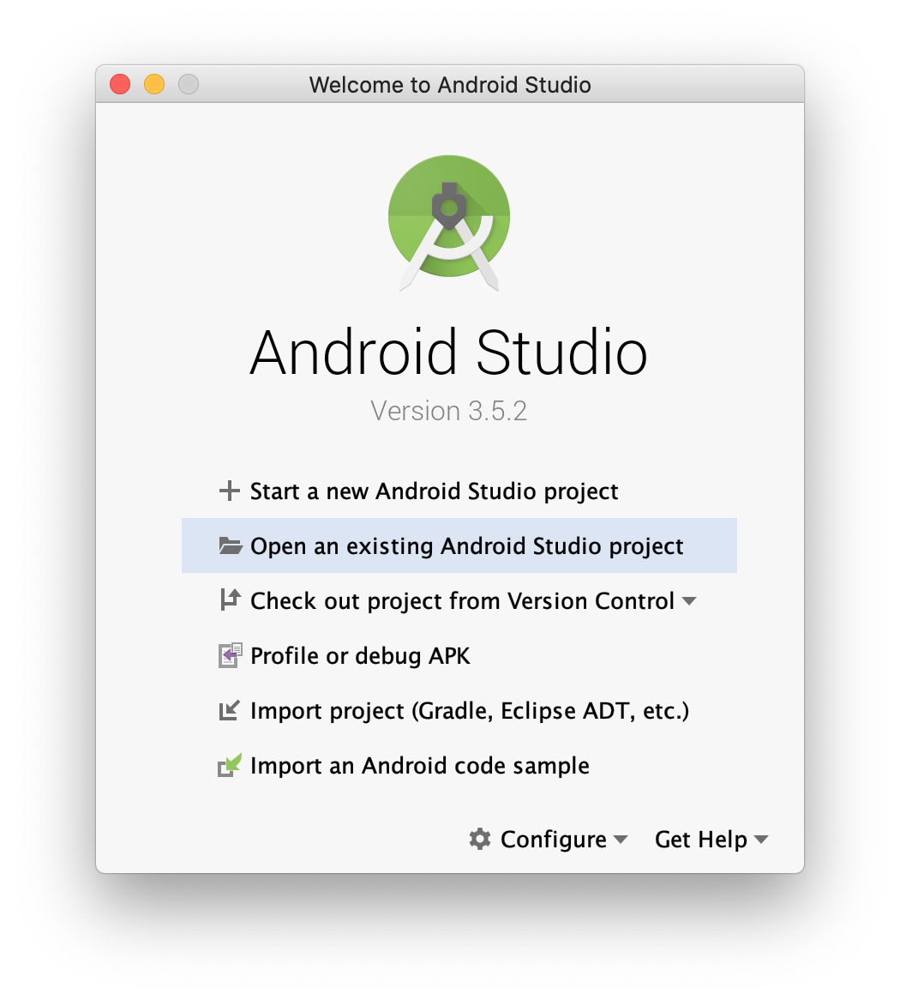
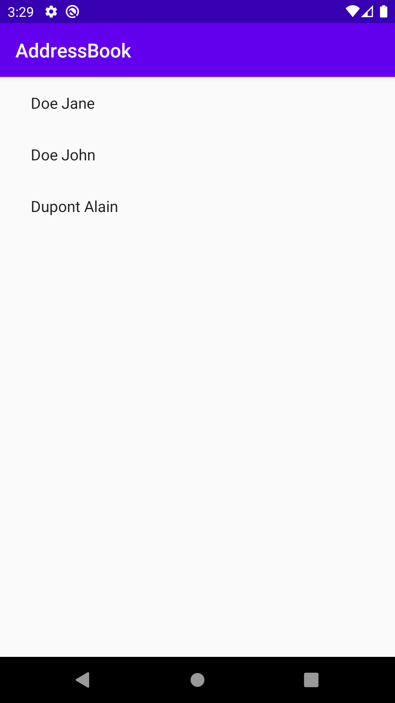

| As said in the first chapter, we are not here to take a deep dive into the different targeted platform. So, to stay focused on Kotlin multi-platform development, we will provide empty projects, ready to run for each platform. Of course, those projects need to be modified. |
Starting with Android, we will be modifying an existing project to use our Kotlin multi-platform library.
Cloning the starter project
You can find the Android starter project on GitHub.
Open a terminal and run the following Git command:
git clone https://github.com/romainbsl/mpp-workshop-android-starter.git |
Now, open the project with Android Studio, by clicking on Open an existing Android Studio project. |
Configuration
Gradle
Android Studio generates the build.gradle files, in Groovy, not Kotlin.
|
| Here the Gradle configuration as been generated and prepared to avoid any issues. |
Normally, you have published your Kotlin multi-platform library on your local Maven repository, with the version 1.0.0.
So, we just have to add it to the gradle configuration to be able to use our Kotlin multi-platform library as a project dependency.
//...
repositories {
mavenLocal()
}
//...Then, add the following dependencies to your build.gradle into the app module
//...
dependencies {
//...
implementation 'com.mybusiness:addressbook-common:1.0.0' (1)
implementation 'org.jetbrains.kotlinx:kotlinx-coroutines-android:1.3.2' (2)
//...
}| 1 | The dependency is named addressbook-common-android because we have defined android as our target |
| 2 | Provides Dispatchers.Main context for Android applications |
| We do not need to specify the target name for our Kotlin multi-platform project. |
Android Manifest
Our application needs to access a backend API to retrieve the contacts. This means that the application must have internet privilege, otherwise we will get a permission exception from the Android system
Go to the file app/src/main/AndroidManifest.xml and add the following permission:
<manifest>
<!-- ... -->
<uses-permission android:name="android.permission.INTERNET"/>
<!-- ... -->
</manifest>Retrieve and display the contact list
Change the RecyclerView adapter
The most popular way to display items in a list on Android is using a RecyclerView.
We already have defined an adapter for the RecyclerView, but we need to configure it.
Go to the Kotlin source file SimpleItemRecyclerViewAdapter.kt
Then, remove the class EmptyContact, leading to an issue Unresolved reference: EmptyContact.
To fix this, change the constructor’s second parameter values, to be type of List<Contact> instead of List<EmptyContact>.
class SimpleItemRecyclerViewAdapter(private val parentActivity: ItemListActivity,
private val values: List<Contact>)Afterwards, we need to do two things into this class:
-
change the event
onClickListener, to launch a new activity that will display the details of the clicked contact.Go to the
initblock and change theView.OnClickListenerlambda:SimpleItemRecyclerViewAdapter.kt//... init { onClickListener = View.OnClickListener { v -> val contact = v.tag as Contact (1) val intent = Intent(v.context, ItemDetailActivity::class.java).apply { (2) putExtra(ItemDetailFragment.CONTACT_ID, contact.id) (3) } v.context.startActivity(intent) (4) } } //...1 Get the contact clicked from the RecyclerView2 Create a new screen that will be responsible to show the contact’s details 3 Set the contact Id into the extra data of the new screen to be able to get the contact details 4 Launch the new screen -
override the function
onBindViewHolder, to set theRecyclerViewitem behaviorAdd the following overriding function into the class
SimpleItemRecyclerViewAdapter. This will define the behavior of each item into theRecyclerView.SimpleItemRecyclerViewAdapter.ktoverride fun onBindViewHolder(holder: ViewHolder, position: Int) { val contact = values[position] (1) holder.contentView.text = contact.fullName (2) with(holder.itemView) { tag = contact (3) setOnClickListener(onClickListener) (4) } }1 Get the contact for a given RecyclerViewitem position2 Define what is shown into the RecyclerViewitem3 Add the contact as meta data of the RecyclerViewitem4 Set the on click event for the current RecyclerViewitem
Call the common library from the View
We just finished the configuration of our RecyclerView adapter, that will help display our contact list.
Now, we should be able to call our business logic, defined into our Kotlin multi-platform library,
to give life to our application.
The view that will show the contact list is ItemListActivity.
This is the last class that we need to change to display our contact list. Open it.
Remember the MVP pattern. We already have wrote the Model and the Presenter into our Kotlin multi-platform library. Here we are working on the View. So, the View needs to implement the contract that we have defined and needs to be bound to the right Presenter.
-
Respect the contract from
ContactList.ViewItemListActivity.ktclass ItemListActivity : AppCompatActivity(), ContactList.View { (1) override fun displayContactList(contactList: List<Contact>) { (2) item_list.adapter = SimpleItemRecyclerViewAdapter(this, contactList) (3) } }1 Implements the interface ContactList.View, defined into the common library2 Implements the function displayContactList, defined by the interface3 Setting up the RecyclerViewadapter, by passing the contact list that needs to be displayed on screenFinally, the function
displayContactListwould be called by the Presenter when the data will be ready to display. -
Bind the view to the presenter
ContactListPresenterTo bind our view with the presenter, surely we will need to provide a
ContactListPresentertoItemListActivity, and we must attached them while the view starts.Also, as we want to avoid memory leaks, we have to detach the view from the presenter when the view is destroyed.
In a real world application, you should manage a state for the presenter, to avoid destroying it if the phone orientation change, for example. ItemListActivity.kt// ... private val presenter = CommonInjector.contactListPresenter() (1) // ... override fun onStart() { super.onStart() presenter.attachView(this) (2) } // ... override fun onDestroy() { super.onDestroy() presenter.detachView() (3) }1 Retrieve a ContactListPresenterinstance from the dependency injection objectCommonInjector.2 When the view starts, attach the view to the presenter. 3 When the view is destroyed, detach the view from the presenter.
Run the application
You can run the application onto an Android Emulator by clicking the button  in Android Studio.
in Android Studio.
 |
Here are the contacts retrieved from our backend API |
| If you are curious and have clicked on an item from the list, you should see that nothing is shown, except static values. This is our next part, showing the contact details. |
Retrieve and display the contact details
In the previous part, we have worked on displaying the contacts into a RecyclerView. While configuring this RecyclerView,
we have wrote that when clicking onto an item of the list we should run an another view, by passing it the contact Id.
Now, we are able to change this view by binding it to the presenter ContactDetailPresenter and implementing the contract interface ContactDetail.View.
The view is divided into two parts, the ItemDetailActivity that will handle the state of the view,
and the ItemDetailFragment that is responsible on displaying data to the screen.
When the ItemDetailActivity is created, it receives the Id of the contact for which we need to display the details.
As we will be binding the view (Fragment) with the presenter, we have to pass this reference to the fragment as well.
For that, we should update the function onCreate of ItemDetailActivity:
override fun onCreate(savedInstanceState: Bundle?) {
// ...
if (savedInstanceState == null) {
val fragment = ItemDetailFragment().apply {
arguments = Bundle().apply { (1)
putString(
ItemDetailFragment.CONTACT_ID,
intent.getStringExtra(ItemDetailFragment.CONTACT_ID) (2)
)
}
}
// ...
}
}| 1 | Add extra data as arguments after creating the new fragment. |
| 2 | Add the contact Id, already passed to the Activity by the RecyclerView. |
Respect the contract from ContactDetail.View
class ItemDetailFragment : Fragment() , ContactDetail.View { (1)
override fun displayContact(contact: Contact) { (2)
val toolbarLayout: CollapsingToolbarLayout? = activity?.toolbar_layout
if (toolbarLayout != null) toolbarLayout.title = contact.fullName (3)
phonesTextView.text = if (contact.phones.isNotEmpty()) { (4)
contact.phones.map {
"${it.type}: ${it.number}"
}.joinToString (separator = "\n")
} else "_"
addressesTextView.text = if (contact.addresses.isNotEmpty()) { (5)
contact.addresses.map {
"""
|${it.type}:${it.street}
| ${it.postalCode} ${it.country}
| ${it.country}
""".trimMargin()
}.joinToString (separator = "\n------------------------------------------------------------\n")
} else "_"
}
}| 1 | Implements the interface ContactDetail.View, defined into the common library. |
| 2 | Overrides the function displayContact, defined by the interface and called by the presenter. |
| 3 | Display the contact name in the header of the screen. |
| 4 | Show the phone list as a text in the body of the screen. |
| 5 | Show the address list as a text in the body of the screen. |
Bind the view to the presenter ContactListPresenter
// ...
private val presenter =CommonInjector.contactDetailPresenter() (1)
// ...
override fun onCreateView(
inflater: LayoutInflater, container: ViewGroup?,
savedInstanceState: Bundle?
): View? {
presenter.attachView(this) (2)
arguments?.let {
if (it.containsKey(CONTACT_ID)) {
presenter.getContact(it.getString(CONTACT_ID) as String) (3)
}
}
return inflater.inflate(R.layout.item_detail, container, false)
}
// ...
override fun onDestroy() {
super.onDestroy()
presenter.detachView() (4)
}
// ...| 1 | Retrieve a ContactListPresenter instance from the dependency injection object CommonInjector. |
| 2 | When the view is created, attach it to the presenter. |
| 3 | Call the presenter to retrieve the contact details for a given contact Id. The contact Id found in the arguments passed at the Fragment instantiation. |
| 4 | When the view is destroyed, detach it from the presenter. |